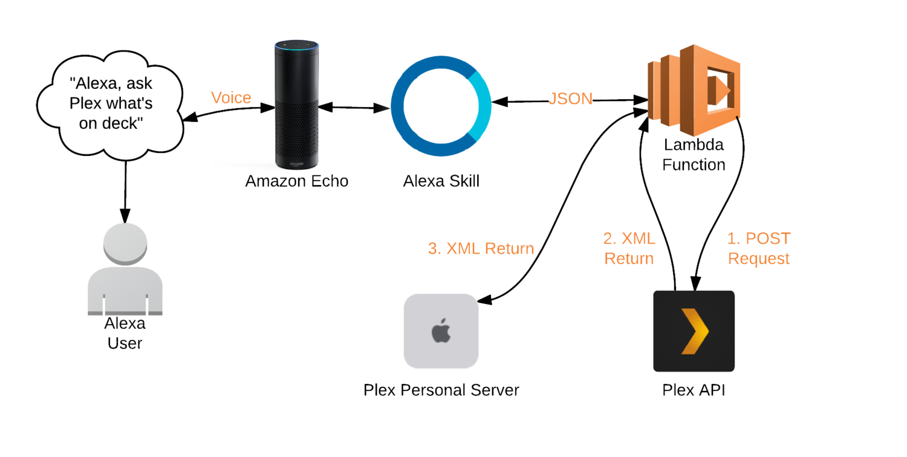

Plex for Alexa
Recently, I have started playing around with Alexa skill services. I currently use plex for my media content and found a project on github that has built an alexa skill already. (thanks to @overloadut)
https://overloadut.github.io/alexa-plex/
As a pet project, I decided to get this up and running.
Below I will go into detail on the steps involved.
Process

Prerequisites
- Plex media server running
- AWS account
- Plex Home theater (PHT) client
- Have basic knowledge of aws services, nodeJS and setting IAM roles.
- Enable remote access for Plex
Locally
Install node, npm and git
Clone the github repo https://github.com/OverloadUT/alexa-plex
Run
npm install
to install dependencies Create a .env file in project root with similar properties as below:
APP_PRODUCT=Alexa Plex
APP_VERSION=2.0
APP_DEVICE=Amazon Echo
APP_DEVICE_NAME=Alexa
APP_IDENTIFIER=
ALEXA_APP_ID=
AWS_ACCESS_KEY_ID=<your own key>
AWS_SECRET_ACCESS_KEY=<your own secret key>
There is a deploy script at the root of the project. Before you run this and update your lambda function, you need to first create it.
AWS Lambda
Create IAM role that has access to lambda and to dynamodb.
If you have aws cli setup try the sample script below.
NB: Make sure and change the role val.
aws lambda create-function --function-name alexa-plex --region us-east-1 --runtime nodejs4.3 --role arn:aws:iam::xxxxxx:role/lambda_basic_execution --handler index.handler
Verify you can view the lambda function in the aws console.
Change to trigger to be "Alexa skills kit".
DynamoDB
Create a table named AlexaPlexUsers with a primary string key of userid.
Create alexa skill
Navigate to Amazon Developer Portal to begin the Alexa Skill process.
Sign In >> Alexa >> Alexa Skills Kit >> Add new skill
Skill Information
Fill in the Alexa Skill store details. Define the invocation name as home theater.
Interaction Model
This will setup what commands "Plex" can process. The sample utterances enable Alexa to process a variety of phrases for the same interaction.
Copy in the intent schema, sample utterances and custom slot. The files are located under directory ask_configuration.
Configuration
You'll want to fill in your Lambda ARN here.
Set Account Linking to No.
Test
Now the fun part... 😛
Use the service simulator to test it out.
You'll need to link Alexa to your Plex account. Open your web browser to http://plex.tv/link and ask Alexa:
"Alexa, tell home theater to continue setup"
Alexa will guide you through the steps to link your account. Simply keep saying that same command and it should move to the next step.
Once all is good, try playing a tv show
"Alexa, tell home theater to play Mr. Robot"
Troubleshooting
If you receive no response from lambda function, make sure you increase the timeout greater than ten seconds.
Any errors in the function, review the cloudwatch logs.
I had an issue where the default player was Plex Web for Chrome and not my Rasplex. So I needed to change this entry in the dynamodb table.
You will see there is a player object. You need to change the machine identifier to the client that is running plex home theater. How you find that out, is by logging into plex.tv, launching the webapp and inspecting the network requests.
You can do this in Chrome by launching developer tools. You will see a XHR request similar to https://plex.tv/devices.xml. If you review the response you will find the client identifier value for the device you need. For me it was rasplex.
Versions
- PMS Version 1.0.3.2461
- Rasplex Version 1.6.2.123-e23a7eef
TODO Add in video showing how it plays